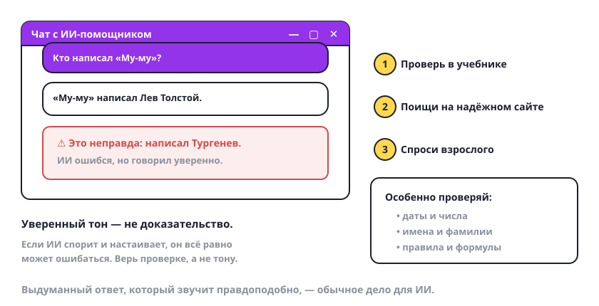

ИИ ошибается: проверяй ответы
Самое важное правило: ИИ может уверенно написать неправду. Не потому что врёт, а потому что подбирает подходящие слова.

Как не попасться
- Бывает, что ИИ выдумывает. Может придумать дату, автора книги или правило, которого нет. И написать это спокойно, будто так и есть.
- Чаще всего он ошибается в точном. Даты, числа, имена и фамилии, формулы, правила — это проверяй всегда.
- Проверяй в трёх местах. Учебник, надёжный сайт, взрослый рядом. Хотя бы одно из трёх.
- Уверенный тон — не доказательство. Если ИИ спорит и настаивает, он всё равно может быть неправ. Верь проверке, а не тону.
- Заметил ошибку — скажи об этом. Напиши: «по-моему, это неверно, проверь». Часто ответ сразу исправится.
Попробуй сам: спроси у ИИ, кто написал книгу «Муму», и проверь ответ в учебнике или у взрослых. Совпало или нет?
Правило простое: если ответ пойдёт в тетрадь или в доклад — сначала проверь его в другом месте.